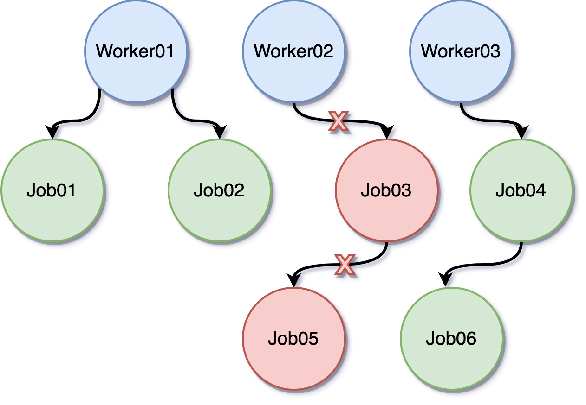

Go goroutine 控制方式指南：WaitGroup、channel、context 與 errgroup
context 在 Go 1.7 才正式納入標準函式庫。初學 Go、開始撰寫 API 或處理併發程式時，常會在 http handler 或 service function 的第一個參數看到：
ctx context.Context
很多人學 Go 併發時，會先碰到 goroutine，接著遇到幾個常見問題：
- 怎麼等一批 goroutine 全部做完？
- 怎麼通知 goroutine 停止？
- 怎麼讓一整串流程在 timeout 時一起取消？
- 怎麼做到「其中一個失敗，其他也跟著停」？
這篇文章不只談 context，而是用實際例子把 WaitGroup、channel、context 與 errgroup 放在一起比較。你可以把它當成一份 goroutine 控制方式的入門地圖，先理解每種工具解決的問題，再決定實務上該怎麼組合使用。
先看結論：怎麼選比較快
如果你現在手上就有 goroutine 控制需求，可以先看這張速查表：
我要解決的問題 優先考慮
---------------------------------------------------------
等全部 goroutine 做完 WaitGroup
goroutine 之間傳資料 channel
通知單一或少量 worker 停止 channel
整條呼叫鏈一起取消 context
限制執行時間 context.WithTimeout
任一 goroutine 失敗就全停 errgroup
限制同時最多 N 個 goroutine 執行 buffered channel / semaphore
程式關機時收尾 signal.NotifyContext + WaitGroup
實務上最常見的組合通常不是四選一，而是：
channel傳資料。context控制取消。WaitGroup等待收尾。errgroup處理平行任務的錯誤傳播。
這篇怎麼讀
這篇文章會照下面的順序走：
- 先看 goroutine 控制到底分成哪幾類問題。
- 再理解
context為什麼跟channel不完全一樣。 - 最後分別看
WaitGroup、channel、context、errgroup的範例。
如果你是初學者，照順序看會最好懂；如果你只是想選工具，看到上面的速查表就可以先做第一輪判斷。
先把 goroutine 控制問題分好類
先不要急著背 API，先把問題拆開看：
goroutine 控制其實分成幾類：
1. 等待完成 -> WaitGroup
2. 傳遞資料/訊號 -> channel
3. 取消/逾時 -> context
4. 錯誤傳播 -> errgroup
5. 限制併發數 -> buffered channel / semaphore
如果你先分清楚你要控制的是哪一種問題，後面選工具就會很快。
先用一張圖理解 context 在解決什麼問題
這裡說的「整條呼叫鏈」，意思不是只有一個 goroutine，而是同一次任務從上到下會經過的整串呼叫流程，例如：
Client Request
│
v
HTTP Handler
│
v
Service
│
├── Query DB
├── Call Redis
└── Call External API
上面這整串就是一條呼叫鏈。
Handler是入口。Service是業務邏輯。DB / Redis / External API是下游依賴。
如果 Handler 拿到的 ctx 被取消，這個取消訊號就可以一路往下傳到 Service、DB、Redis、外部 API。這就是「整條呼叫鏈一起取消」。
很多人第一次看到 context.Context，會以為它只是另一種 channel。其實它真正解決的是「跨函式、跨 goroutine 傳遞控制訊號」這件事，尤其適合 request-based 或多層呼叫的流程。
HTTP Request
│
v
Handler
│ 建立 request context
v
Service
│ 往下傳遞同一個 ctx
v
Repository
│
v
DB / RPC / 外部 API
取消來源可能是：
1. 使用者中斷連線
2. Server 主動 shutdown
3. Timeout 到期
一旦上層 ctx 被取消，下面整串流程都能收到通知。
再看一次取消是怎麼往下傳的：
Client disconnect / timeout
│
v
cancel ctx
│
v
HTTP Handler
│
v
Service
┌─────┼───────────┐
v v v
DB Redis External API
結果：
- Handler 不再等結果
- Service 停止後續處理
- DB / Redis / API 收到 ctx.Done() 後盡快中止
如果只靠函式回傳值，你得一層一層手動處理停止條件；如果只靠單一 channel，當流程跨了好幾層函式或好幾組 worker，管理成本就會快速變高。context 的價值就在這裡。
實務情境：交易系統或訂票系統會長怎樣
很多人看到「整條呼叫鏈」時，會立刻想到這種問題：
- 如果很多使用者同時下單，會不會全部混在同一個
context？ - 如果很多人同時搶票，系統是不是把所有訂單集中在一起處理？
答案是：
context通常是「每一次請求一份」。- 訂單或票務資料可以「集中處理」，但那是業務資料流，不是把所有請求共用同一個
context。
先分清楚兩件事
層次 A：請求控制
- 誰發起請求
- 這次請求多久 timeout
- 使用者是否斷線
- 這次請求要不要取消
層次 B：業務資料處理
- 訂單要不要進 queue
- 庫存要不要鎖定
- 撮合引擎怎麼排序
- 哪些 worker 負責處理
context 管的是層次 A，不是層次 B。
交易系統的常見樣子
假設很多使用者同時送出買賣單：
User A ---- HTTP/gRPC Request A ----> Handler A ----> Service A ----> Order API / DB / Queue
User B ---- HTTP/gRPC Request B ----> Handler B ----> Service B ----> Order API / DB / Queue
User C ---- HTTP/gRPC Request C ----> Handler C ----> Service C ----> Order API / DB / Queue
每個 Request 都有自己的 ctxA / ctxB / ctxC
這裡要注意兩件事：
ctxA、ctxB、ctxC是分開的，因為它們代表不同使用者、不同請求的生命週期。- 這些請求最後可以把訂單寫進同一個集中式系統，例如同一個 queue、同一個 order book、同一個資料庫。
也就是說：
context不會把所有訂單「集中成一份」。- 訂單資料可以被系統「集中管理」。
這兩件事不能混在一起看。
交易系統裡 context 真正管什麼
假設使用者 A 下單後，流程可能是：
Request A
│
v
Create Order Handler
│
v
Order Service
├── 驗證使用者餘額
├── 寫入 Order DB
├── 發送到 Matching Queue
└── 記錄審計日誌
如果這時候：
- 使用者連線斷掉
- API gateway timeout
- server 正在 shutdown
那 Request A 對應的 ctxA 就可以通知這條流程停止，避免：
- DB 查詢還在白跑
- 外部風控 API 還在等
- queue publish 一直卡住
但是，已經成功寫入 queue 的訂單，之後要不要繼續被撮合，這是業務規則問題，不是 context 自己決定。
訂票系統也是一樣
很多人搶同一場演唱會門票時，系統常常會把「搶票請求」跟「庫存處理」拆開。
User A Request ----> Ticket Handler ----> Ticket Service ----> Lock Seat / Create Order
User B Request ----> Ticket Handler ----> Ticket Service ----> Lock Seat / Create Order
User C Request ----> Ticket Handler ----> Ticket Service ----> Lock Seat / Create Order
下游可能共用：
- 同一個庫存系統
- 同一個訂單資料庫
- 同一個排隊機制
每個人搶票時，都有自己的 request context。某一個使用者頁面關掉，不代表其他人的請求也該取消。
但在業務層面上，大家可能會一起競爭：
- 同一批座位庫存
- 同一個訂票 queue
- 同一張活動場次表
所以「請求是分開的」，但「資源可能是共享的」。
一張圖看懂：request context 跟集中處理不是同一層
每個使用者都有自己的 request context
User A -- ctxA --> Handler A --> Service A --+
|
User B -- ctxB --> Handler B --> Service B --+--> Shared DB / Queue / Inventory
|
User C -- ctxC --> Handler C --> Service C --+
左邊：
- ctxA / ctxB / ctxC 各自控制各自的請求生命週期
右邊：
- Shared DB / Queue / Inventory 是集中管理的共享資源
這是實務上最常見的樣子。
什麼時候會用「全系統共用」的 context
也不是完全沒有共享 context，只是共享的通常不是「所有使用者訂單共用一個 request context」，而是像這樣：
serverCtx
├── background matching engine
├── settlement worker
├── notification worker
└── metrics reporter
這種 serverCtx 通常是用來表示：
- 整個服務正在 shutdown
- 背景 worker 要一起停止
- 程式生命週期結束
也就是說：
request ctx：控制單次請求server ctx：控制整個服務或某一批背景工作
一句話記住
在交易系統或訂票系統裡，通常不是「所有訂單共用一個 context」，而是「每個請求有自己的 context，但它們可能共同操作同一批集中管理的資源」。
幾個工具的定位差在哪裡
先記一個簡單判斷方式：
WaitGroup：等工作全部做完。channel：傳資料或傳單一協調訊號。context：傳遞取消、逾時、截止時間與 request 範圍內資訊。errgroup：幫一組 goroutine 收錯誤，並在需要時一起取消。
需求類型 建議工具
--------------------------------------------------
等 3 個 goroutine 全部結束 WaitGroup
通知 1 個 worker 停止 channel
通知一整串流程停止 context
其中 1 個 goroutine 失敗就全停 errgroup
限制請求最多執行 2 秒 context.WithTimeout
夾帶 request id 往下傳遞 context.WithValue
這三者不是互斥關係。實務上常見的組合是：
- 用
WaitGroup等待 goroutine 收尾。 - 用
context發出取消訊號。 - 用
channel傳遞結果或工作內容。 - 用
errgroup把錯誤處理與取消控制整合起來。
教學影片
如果你對課程內容有興趣，可以參考以下資源：
如果需要搭配購買，請直接透過 FB 聯絡我。
1. 等全部做完：WaitGroup
學 Go 時一定會碰到 goroutine，而 goroutine 的協調方式常見有兩種：一種是 WaitGroup，另一種是 context。
那什麼時候該用 WaitGroup？很簡單，當你把同一件事拆成多個 job 並行執行，而且主程式必須等所有 job 都完成之後才能繼續，這時候就很適合使用 WaitGroup。
package main
import (
"fmt"
"sync"
"time"
)
func main() {
var wg sync.WaitGroup
wg.Add(2)
go func() {
time.Sleep(2 * time.Second)
fmt.Println("job 1 done.")
wg.Done()
}()
go func() {
time.Sleep(1 * time.Second)
fmt.Println("job 2 done.")
wg.Done()
}()
wg.Wait()
fmt.Println("all done.")
}
上面的例子中，主程式透過 wg.Wait() 等待所有 job 執行完成，最後才印出訊息。
不過會有另一種情境：工作雖然拆成多個 job 丟到背景執行，但如果使用者想透過 UI 上的「停止」按鈕，或透過其他外部事件主動終止正在執行的 goroutine，該怎麼做？這時可以先用 channel + select 來處理。
WaitGroup 的角色
WaitGroup 很適合「等結束」，但它本身不負責「叫別人停下來」。也就是說，它解決的是同步收尾問題，不是取消控制問題。
main goroutine
│
├── worker 1
├── worker 2
└── worker 3
main 只做一件事：
等待所有 worker 都呼叫 Done()
如果你的需求是「工作做到一半也可能被外部取消」，那 WaitGroup 通常還不夠。
2. 通知停止或傳資料：channel + select
package main
import (
"fmt"
"time"
)
func main() {
stop := make(chan bool)
go func() {
for {
select {
case <-stop:
fmt.Println("got the stop channel")
return
default:
fmt.Println("still working")
time.Sleep(1 * time.Second)
}
}
}()
time.Sleep(5 * time.Second)
fmt.Println("stop the goroutine")
stop <- true
time.Sleep(5 * time.Second)
}
透過 select + channel，可以很直接地通知背景 goroutine 停止工作。只要在任何地方把值送進 stop channel，背景工作就會收到訊號並結束。
這種寫法什麼時候夠用
當流程簡單、worker 數量少，而且停止訊號只在單一區域內使用時，channel 非常直接。
main ----stop----> worker
但如果背景不只一個 goroutine，而是很多個 goroutine，甚至 goroutine 裡面還會再啟動新的 goroutine，事情就會變得很複雜。像下圖這種層層展開的 worker 結構，就不太適合只靠單一 channel 來管理：

這時候就輪到 context 登場了。
3. 控制取消與逾時：context
從上圖可以看到，主程式先建立一個根 context.Background()，接著讓每個 worker 依照需要延伸出自己的子 context。這樣一來，只要取消某個 context，就能讓該 context 之下的工作一併收到停止通知。
先把前面的 channel 範例改寫成 context：
package main
import (
"context"
"fmt"
"time"
)
func main() {
ctx, cancel := context.WithCancel(context.Background())
go func() {
for {
select {
case <-ctx.Done():
fmt.Println("got the stop channel")
return
default:
fmt.Println("still working")
time.Sleep(1 * time.Second)
}
}
}()
time.Sleep(5 * time.Second)
fmt.Println("stop the goroutine")
cancel()
time.Sleep(5 * time.Second)
}
可以看到，邏輯幾乎沒變，只是把原本的 stop channel 改成監聽 ctx.Done()。而這裡最關鍵的是：
ctx, cancel := context.WithCancel(context.Background())
context.WithCancel 會回傳一個新的 context，以及對應的 cancel func。這代表每個 worker 都可以有自己的取消控制點，開發者能在合適的地方呼叫 cancel()，決定要停止哪一段工作。
父子 context 的關係
context 最實用的地方，是它天然適合表達「父流程帶著子流程一起走」。
context.Background()
│
└── requestCtx
│
├── dbCtx
├── cacheCtx
└── rpcCtx
只要 requestCtx 被取消：
- dbCtx 會收到取消
- cacheCtx 會收到取消
- rpcCtx 會收到取消
這很適合 HTTP request、批次任務、背景同步流程，因為你通常希望上層任務失效時，下游工作也同步停止，不要繼續浪費資源。
context 範例：一次停止多個 worker
下面這個範例示範如何用同一個 context 同步停止多個 worker：
package main
import (
"context"
"fmt"
"time"
)
func main() {
ctx, cancel := context.WithCancel(context.Background())
go worker(ctx, "node01")
go worker(ctx, "node02")
go worker(ctx, "node03")
time.Sleep(5 * time.Second)
fmt.Println("stop the goroutine")
cancel()
time.Sleep(5 * time.Second)
}
func worker(ctx context.Context, name string) {
for {
select {
case <-ctx.Done():
fmt.Println(name, "got the stop channel")
return
default:
fmt.Println(name, "still working")
time.Sleep(1 * time.Second)
}
}
}
透過同一個 context，可以一次停止多個 worker。實務上我通常會把這種模式搭配 graceful shutdown 一起使用，例如停止背景 job、關閉資料庫連線，或中止正在等待的外部請求。
4. 錯誤傳播加取消：errgroup
如果你的需求是「開幾個 goroutine 並行做事，只要其中一個失敗，就取消其他 goroutine，最後把錯誤收斂回來」，那 errgroup 會比手動組合 WaitGroup + channel + context 更省事。
errgroup 來自 golang.org/x/sync/errgroup，常見於 fan-out/fan-in、平行查詢、聚合外部服務結果這類場景。
package main
import (
"context"
"fmt"
"time"
"golang.org/x/sync/errgroup"
)
func main() {
g, ctx := errgroup.WithContext(context.Background())
g.Go(func() error {
return fetch(ctx, "db", 1*time.Second, false)
})
g.Go(func() error {
return fetch(ctx, "cache", 2*time.Second, true)
})
g.Go(func() error {
return fetch(ctx, "api", 3*time.Second, false)
})
if err := g.Wait(); err != nil {
fmt.Println("group failed:", err)
}
}
func fetch(ctx context.Context, name string, d time.Duration, fail bool) error {
select {
case <-time.After(d):
if fail {
return fmt.Errorf("%s failed", name)
}
fmt.Println(name, "done")
return nil
case <-ctx.Done():
return ctx.Err()
}
}
上面這段程式的重點是：
cache失敗後，g.Wait()會回傳錯誤。- 同一時間，其它 goroutine 會因為共享的
ctx被取消。 - 你不需要自己再額外維護錯誤 channel。
errgroup
│
├── task 1 成功
├── task 2 失敗 ----+
└── task 3 執行中 |
v
cancel shared ctx
│
v
其他 task 收到停止
什麼時候用 errgroup
適合場景：
- 同時查多個外部服務，任一失敗就整體失敗。
- 一次併發處理多個步驟，但只接受全部成功。
- 希望錯誤與取消邏輯寫得比
WaitGroup更簡潔。
不一定適合的場景：
- 你只是單純想等所有 goroutine 結束，沒有錯誤傳播需求。
- 任務彼此獨立，就算某個失敗也不需要取消其他人。
進一步理解 context 的實務用法
前面的例子是 WithCancel，也就是手動取消。實務上還有兩種常見用法，理解後會更容易看懂 production code。
1. 用 WithTimeout 控制最長執行時間
當你呼叫外部 API、資料庫，或任何可能卡住的操作時，通常都不該無限等待。
package main
import (
"context"
"fmt"
"time"
)
func main() {
ctx, cancel := context.WithTimeout(context.Background(), 2*time.Second)
defer cancel()
if err := callRemoteAPI(ctx); err != nil {
fmt.Println("request failed:", err)
}
}
func callRemoteAPI(ctx context.Context) error {
select {
case <-time.After(3 * time.Second):
fmt.Println("remote api done")
return nil
case <-ctx.Done():
return ctx.Err()
}
}
這段程式裡，外部呼叫需要 3 秒才完成，但 context 只給它 2 秒，所以最後會提早返回 context deadline exceeded。
main
│
└── callRemoteAPI
│
├── 2 秒內完成 -> 回傳結果
└── 超過 2 秒 -> ctx.Done() -> 中止
適合場景：
- HTTP client 請求外部服務。
- SQL 查詢不希望卡太久。
- 背景 job 中某個步驟必須有限時。
2. 用 WithValue 傳遞 request-scoped 資訊
WithValue 常用來往下傳遞 request id、trace id、登入使用者資訊等「跟這次請求綁定」的資料。
package main
import (
"context"
"fmt"
)
type contextKey string
const requestIDKey contextKey = "request-id"
func main() {
ctx := context.WithValue(context.Background(), requestIDKey, "req-123")
handle(ctx)
}
func handle(ctx context.Context) {
requestID, _ := ctx.Value(requestIDKey).(string)
fmt.Println("request id:", requestID)
}
不過這裡要特別注意：context 不是萬用資料袋。不要把它拿來傳 service、database connection 或一堆可選參數，否則程式會變得很難維護。
建議只放這類資料：
- request id
- trace id
- 使用者身份資訊
- 語系或權限這種 request 範圍資訊
不建議放這類資料：
- logger 以外的大型依賴物件
- repository 或 service instance
- 業務邏輯輸入參數
常見誤用
初學者最容易踩到的不是語法，而是用法。
1. 忘記呼叫 cancel
像 WithCancel、WithTimeout、WithDeadline 這些 API 都會回傳 cancel。如果生命周期已經結束，通常要記得呼叫，讓內部資源能及早釋放。
ctx, cancel := context.WithTimeout(context.Background(), 5*time.Second)
defer cancel()
2. 把 context 存進 struct
通常不建議這樣做：
type Service struct {
ctx context.Context
}
比較好的方式是把 ctx 當成每次呼叫的參數傳入，因為 context 代表的是一次操作的生命週期，不是物件本身的固定狀態。
3. 用 context 取代正常函式參數
下面這種就不是好用法：
ctx := context.WithValue(context.Background(), "limit", 10)
ctx = context.WithValue(ctx, "offset", 20)
如果 limit、offset 是業務邏輯必要參數，就應該直接寫在函式簽名裡，而不是塞進 context。
最後用一個完整例子串起來
假設你正在寫一個 HTTP API：
- Handler 收到請求後拿到
r.Context()。 - Handler 呼叫 service，並把
ctx往下傳。 - Service 用
errgroup同時打 DB 與第三方 API。 - 如果使用者提前中斷連線，或 API timeout，整串流程都會收到取消訊號。
Client
│
v
HTTP Handler
│ r.Context()
v
Service
│
└── errgroup
├── Query DB
└── Call External API
Client disconnect / timeout
└── cancel ctx
├── DB query stop
└── API call stop
如果再加上 errgroup，就能把「平行執行」、「錯誤回收」與「取消傳遞」放在同一套模型裡。這也是為什麼現在很多 Go 專案會把 ctx context.Context 放在函式第一個參數，因為它不是多餘樣板，而是在明確傳遞這次操作的生命週期控制權。
快速複習
如果只記一句話，可以記這個版本：
- 要等大家做完，用
WaitGroup。 - 要傳資料或簡單停止訊號，用
channel。 - 要讓一整串流程一起取消，用
context。 - 要做到「一個失敗全部收掉」，用
errgroup。
心得
剛開始學 Go、還不常用 goroutine 時，通常很難立刻理解 context 的價值。等到你開始寫背景工作、需要控制生命週期，或要處理一整串可以被取消的流程時，就會慢慢體會到 context 的重要性。
當然，context 不只用在取消工作，也常拿來傳遞 deadline、timeout 與 request-scoped value。這些主題之後還可以再分開深入討論。